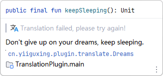

3.4 版本 (2022-?-?)
欢迎使用Translation v3.4，希望您会喜欢此版本中的许多更新，其中一些主要亮点包括：
- DeepL 翻译引擎 - 新增 DeepL 翻译引擎
- 独立的文档翻译状态（实验性） - 每个文档有着自己的独立的翻译状态
- 文档内嵌消息 - 文档翻译错误时在文档内显示错误消息
- 单词本数据同步 - 通过同步服务在多个设备之间同步数据
如果您想在线阅读此发行说明，请访问这里。
翻译 #
DeepL翻译引擎 #

DeepL翻译号称是全世界最精准的机器翻译，比最接近它的竞争对手准确三倍以上。它现在已经被集成到插件中，您可以通过它获得高质量的翻译体验。要使用DeepL翻译引擎，您需要有一个DeepL账号，并在DeepL翻译引擎配置对话框中配置您的账号的认证密钥（认证密钥可以在您的 DeepL 账号设置 中找到）：

DeepL认证密钥有DeepL API Free和DeepL API Pro两个计划，使用DeepL API Free计划，您每月可以免费翻译多达500000个字符。DeepL API Free认证密钥可以通过后缀 “:fx” 轻松识别（例如：279a2e9d-83b3-c416-7e2d-f721593e42a0:fx）。另外，您可以在DeepL翻译引擎配置对话框上查看您当前计费周期的翻译使用情况。
文档翻译 #
独立的文档翻译状态（实验性）#
我们为每个文档都添加了一个翻译状态，每个文档有着自己的独立的翻译状态，而不像此前的那样只有一个全局的状态。因此，更改某个文档的翻译状态将不再影响到其它文档：

提示：此功能为实验性功能，在使用的过程中可能会存在一些问题。
文档内嵌消息 #
当文档翻译发生错误时，将会在文档中内嵌显示一个错误消息，提示当前文档的翻译并未成功：

单词本 #
单词本数据同步 #
现在，您可以更改单词本的存储路径，以及使用iCloud Drive、Google Drive、One Drive和Dropbox等同步服务在多个设备之间同步数据。要使用同步服务同步数据，只需要将存储路径设置到相应的同步文件夹内即可：

鸣谢 #
非常感谢以下对此版本做出贡献的人员：
- @naoyukik (Kodama Naoyuki): Support a new translator API: DeepL PR #986.